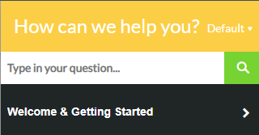
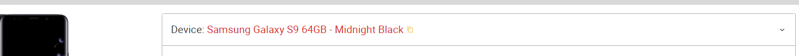
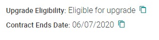
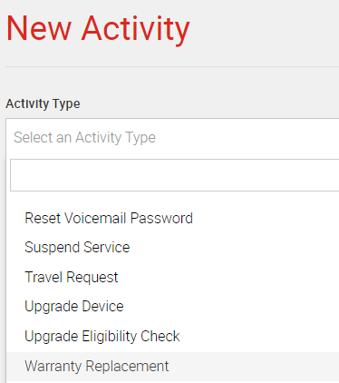
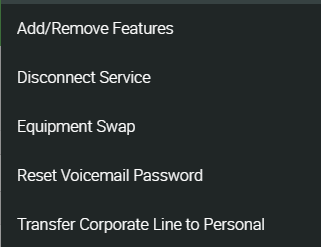
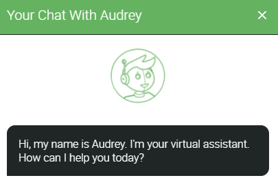
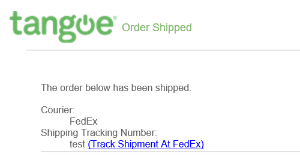
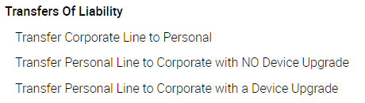
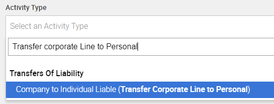

• The Tangoe Tool is a portal that is used to order devices and manage the services of Itron’s corporate cell phones and MiFi devices. Each request will be processed via a unique Order (activity) number which is tracked in the Tangoe Portal.
+
• The Itron Tangoe Program Manager is Sandy Quintana.
+
• As of 10/12/2021, this program only applies to United States Itron employees. Tangoe may be added to other regions in the future.
• After you click the link, you should automatically be logged in with SSO (Single Sign-On)
• If a screen asks you to log in, use your Itron SSO
• Go to the upper right corner of the page and click the section for navigation training.
• You’ll then see this help pop up window, which will help you navigate.

+
• Log into the tool and you will see the dashboard. You will see the devices that are assigned to you, click on the line associated with the device that you’d like to upgrade.
• When the device is displayed, click the down arrow to the right of the device name
i. For example:

ii. Once you click the small arrow, you will see your eligibility status.

• Click the “+” sign in the upper right corner of the page, and select “ New Activity”. Then click the down arrow on the right, and scroll thru the list and choose “Upgrade”
• Follow the steps to place an upgrade order, see the steps below and see item number 8 below.
+
1. Log into the tool and you will see the dashboard. You will see the devices that are assigned to you, click on the line associated with the device that you’d like to upgrade.
2. When the device is displayed, click the down arrow to the right of the device name
i. For example:
ii. Once you click the small arrow, you will see your eligibility status.
• Click the “+” sign in the upper right corner of the page, and select “ New Activity”. Then click the down arrow on the right, and scroll thru the list and choose “Upgrade”
• Follow the steps to place an upgrade order, see the steps below and see item number 8 below.
+
1. To create a new order, go to the upper right corner and click the red button in top right with the “+” sign choose New Activity, click the down arrow and then scroll to select the following activity “Order New Device and New Line of Service”
2. fill the box in with your name, email or phone number
3. Your name and phone number will appear, click on correct name in the search results and then click the red button “Start Activity”
+
1. To upgrade your device, go to the upper right corner and click the red button in top right with the “+” sign choose New Activity, click the down arrow then scroll to select the following activity “Upgrade Device”
2. Then fill the box in with your name, email or phone number
3. Your name and phone number will appear, click on correct name in the search results and then click the red button “Start Activity”
4. Your eligibility status and date of upgrade will be displayed. If you are not eligible for an upgrade at this time, please do not submit for an upgrade until your eligibility date. If your device has been lost/stolen or broken, please see the section 11 in this FAQ.
+
• Your cell phone automatically is provisioned with Verizon TravelPass or AT&T DayPass and has coverage for the following countries:
Coverage includes: Aland Islands, Albania, Anguilla, Antigua & Barbuda, Argentina, Aruba, Australia, Austria, Bahamas, Barbados, Belgium, Belize, Bermuda, Bolivia, Bonaire, St. Eustatius & Saba, Bosnia & Herzegovina, Brazil, British Virgin Islands, Bulgaria, Canada, Cayman Islands, Chile, China, Colombia, Costa Rica, Croatia, Curacao, Czech Republic, Denmark, Dominica, Dominican Republic, Ecuador, El Salvador, Estonia, Finland, France, French Guiana, Germany, Gibraltar, Greece, Grenada, Guadeloupe, Guatemala, Guernsey, Guyana, Haiti, Honduras, Hong Kong, Hungary, Iceland, India, Ireland, Isle of Man, Israel, Italy, Jamaica, Japan, Jersey, Latvia, Liechtenstein, Lithuania, Luxembourg, Macedonia, Malaysia, Malta, Martinique, Mexico, Moldova, Monaco, Montenegro, Montserrat, Netherlands, Netherlands Antilles, New Zealand, Nicaragua, Norway, Palestinian Authority, Panama, Paraguay, Peru, Poland, Portugal, Romania, St. Barthelemy, St. Kitts & Nevis, St. Lucia, St. Maarten (Dutch), St. Martin, St. Vincent & the Grenadines, San Marino, Serbia, Singapore, Slovakia, Slovenia, South Korea, Spain, Suriname, Svalbard, Sweden, Switzerland, Taiwan, Thailand, Trinidad & Tobago, Turkey, Turks & Caicos, Ukraine, United Kingdom (includes England, Northern Ireland, Scotland, Wales), Uruguay, Vatican City, Venezuela
• TravelPass (Verizon) or DayPass (AT&T) – This is an international package that is pre-provisioned on your line. To confirm that the package is on your line, please submit a Travel Request activity by following the instructions in the below step.
• TravelPass and DayPass allow unlimited calling, texting and 0.5GB of data per day. It is recommended that you connect to WiFi when available to avoid any data overages.
o For reference, 0.5GB of data is the equivalent of browsing the internet for 6 hours, streaming 100 songs or watching 1 hour of standard-definition video.
• If you would like to double check the country coverage, you may open a chat or open a new order under the Help module (white question mark upper right corner of the page) and select “Contact Us”
• Please submit a travel request if you are unsure about the coverage you will have about the country you are traveling to. TRAVEL REQUESTS MUST BE SUBMITTED AT LEAST 48 BUSINESS HOURS PRIOR TO TRAVELLING.
iii. Please click on “+” from your dashboard, select “New Activity” then choose Travel Request from the drop down, it will look like this:

+
• International Monthly Plans - If you are traveling for longer than 2 weeks, an international plan with higher usage is recommended. To add a larger international package, you’ll need to submit a “Feature Change” activity. To do this, please follow the below instructions:
(i) From your dashboard in Mobi, click the “+”, and select “New Activity”, then choose “Add/Remove Features”

(ii)Select the international package that you’d like to add.
o For Verizon, you will have two options:
Both plans provide the same allowance noted below:
(i) Talk: Get 250 minutes to use while traveling. Additional minutes are charged $0.25/min.
Data: Get 5 GB to access the internet, email and apps. Additional data is charged $20/GB.
Text: You'll also get 1000 sent messages. You can receive unlimited incoming messages. Additional sent messages are $0.05/message
(ii)$100 international Monthly Plan – Recurring, Billed Monthly
o This plan will continue to bill until a request is entered to have it removed.
(iii)$100 international Monthly Plan – Expires after 30 days, One Time Charge
o This plan will go into effect the date that it is added, and automatically fall off after 1 month
o For AT&T, you will have 4 options.(i) AT&T 2GB Passport Package - Expires after 30 days, One Time Charge
• Voice: $0.35 Per Min
Data: 2GB then $30per GB
Messaging: Unlimited
• You can use the Live chat feature

• Call the Tangoe Helpdesk at 1-888-850-9553
+
• The tracking number will show in the “Activities” pane of your Dashboard. Scroll down until you reach this section to see the status of your order. If your order is completed & shipped the tracking link will be available and will take you to the shipping information. You will also receive an email confirmation that your order has shipped. It will look something like this:

+
• Update your manager that this event has occurred.
• To create a new order, go to the upper right corner and click the red button in top right with the “+” sign choose New Activity then scroll to select the activity “Upgrade Device”
• Then fill the box in with your name, email or phone number
• Your name and phone number will appear, click on correct name in the search results and then click the red button “Start Activity”
• If your phone is lost or stolen, toggle the button in the activity that asks “Is your current device lost or stolen?” This will notify the Tangoe team to reach out to the carrier to blacklist the lost or stolen device.
+
• To create a transfer of liability activity, go to the upper right corner and click the red button in top right with the “+” sign choose New Activity and search for the Activity Type choose the correct option from the choices shown below and click “Start Activity”

• Search for your name, confirm your name when information comes on the screen and follow the steps. When you’ve completed filling out the required information, hit the “submit” button.
• Please be aware that since you are transferring from your personal account to Itron’s corporate account, regardless of your existing carrier, you must contact the carrier to notify them you are authorizing Itron to assume your phone number to Itron’s corporate account. If this initial step is not completed, your number can not be ported over to Itron’s corporate account. Device must be paid off/not in contract and your account must be in good standing.
• If there are any subscriptions that are billed to your personal phone account, those subscriptions must be canceled temporarily prior to the transfer. Please work with your carrier to determine what subscriptions (if any) and how you can cancel them temporarily. If the subscriptions are not canceled, our carriers will not be able to transfer the liability to Itron. Be forewarned that Itron does not pay for iCloud storage. Save/download anything currently saved on your phone that you don’t want to lose.
+
1. To create a transfer of liability activity, go to the upper right corner and click the red button in top right with the “+” sign choose New Activity and search for the Activity Type “Transfer Corporate Line to Personal”

2. Enter your Personal Email and add any transfer notes
i. Note – it is recommended that you transfer your line to a personal account with the same carrier (ex. If you currently have a Verizon line on the corporate account, transfer the line to a personal Verizon account). If you would like to change carriers once you have transferred to a personal account, you are able.
3. When you have finished filling out the required information, select “Continue”
4. Review your information on the following page, and select “Submit”
ii. Note, if you are separating from Tangoe – After you receive confirmation that this request has been completed, you will have seven (7) business days to transfer your corporate line(s) to a personal account. If you do not take action within seven (7) business days, your line(s) will be disconnected and can not be reactivated.
iii. Note - Please be aware that if you are transferring from the corporate account to your personal account, an authorization needs to be submitted on Itron’s end to release the line to you to take to a personal account. When the line is released, if it is mid contract, and you are not staying with the same carrier, an early termination fee may apply. Your manager will need to approve, releasing the number/device and paying the early termination fee. If you plan to stay with the current carrier there is no early termination fee, just know that you will be expected to complete the contract on your personal account
+
1. To create a disconnect activity, go to the upper right corner and click the red button in top right with the “+” sign choose New Activity and search for the Activity Type “Disconnect Service”
2. Choose whether you would like to use an ETF waiver or not. If you are not sure if your line has an ETF (Early Termination Fee), please contact Tangoe Support (refer to section 11 for contact information)
3. When you have finished filling out the required information, select “Continue”
4. Review your information on the following page, and select “Submit”
+
1. Verizon and AT&T provide the option to exchange your device for a different device within 30 days of the purchase date
2. If you’d like to process an exchange, contact the Tangoe Help Desk.
3. The Tangoe Help Desk will provide you with a return label to return the device you’d like to exchange and can process the order for a new device